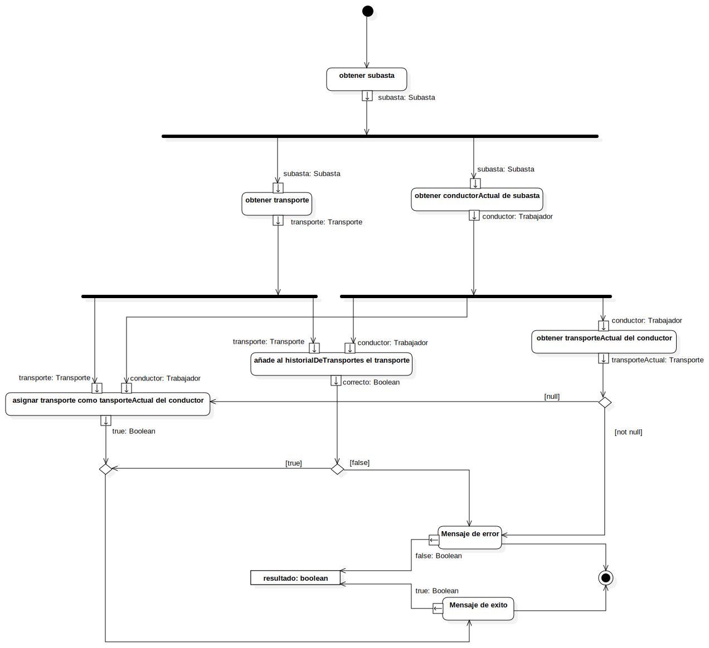

Actividad Asignar transporte a trabajador
UMLActivity
DriveX
::
Diseño
::
Clases de dominio
::
Subasta
::
asignarTransporteATrabajador
::
Actividad Asignar transporte a trabajador
Description
none
Diagrams

Actividad Asignar transporte a trabajador
Nodes
InitialNode1
trabajador
obtener subasta
obtener conductorActual de subasta
ForkNode1
obtener transporteActual del conductor
ForkNode2
añade al historialDeTransportes el transporte
DecisionNode1
Mensaje de error
ActivityFinalNode1
and
DecisionNode2
asignar transporte como tansporteActual del conductor
Mensaje de exito
resultado: boolean
obtener transporte
ForkNode3
Edges
(ForkNode2→transporte)
(ForkNode2→transporte)
(ForkNode1→conductor)
(ForkNode1→conductor)
(subasta→subasta)
(conductor→ForkNode1)
(InitialNode1→obtener subasta)
(correcto→DecisionNode1)
(DecisionNode1→Mensaje de error)
(Mensaje de error→ActivityFinalNode1)
(DecisionNode1→and)
(DecisionNode2→Mensaje de error)
(DecisionNode2→asignar transporte como tansporteActual del conductor)
(true→and)
(and→Mensaje de exito)
(Mensaje de exito→ActivityFinalNode1)
(transporteActual→DecisionNode2)
(true→resultado: boolean)
(false→resultado: boolean)
(subasta→ForkNode3)
(ForkNode3→subasta)
(ForkNode3→subasta)
(ForkNode1→conductor)
(transporte→ForkNode2)
Properties
Name
Value
name
Actividad Asignar transporte a trabajador
stereotype
null
visibility
public
isReentrant
true
isReadOnly
false
isSingleExecution
false
Owned Elements
Actividad Asignar transporte a trabajador